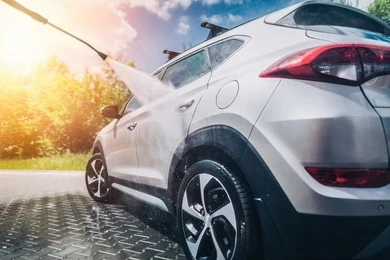
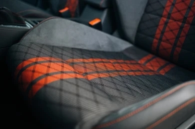

How to keep your tyres clean and in superb condition.
Before cleaning and scrubbing, it is advisable to inspect every tyre, particularly when washing 4x4 or light truck tyres that carry heavier loads. Take note of any foreign objects such as stones, rocks, leaves, or other debris that may have become lodged in the tyre tread. This is an ideal opportunity to eliminate these items and preserve the quality of your tyres.
The following steps will guide you on how to clean and dress your vehicle's tyres:
-
Gather your tyre cleaning tools and products.
Gather all the necessary items to clean your tyres, such as a sponge, bucket, tyre brush, and your preferred tyre cleaning product. An alternative solution can be made using a capful of dish-washing soap in a bucket of water, which effectively removes stubborn dirt from your tyres.
-
Clean your tyres.
To thoroughly clean your tyres, begin by washing them one at a time. If you're using a bucket, change the water after cleaning each tyre to avoid soaking the tyre in dirty water. Next, rinse off any visible dirt using a water hose or pressure washer. Be sure to focus on the wheel rim and wheel wells, removing any brake dust accumulation as well. Once all the dirt and debris is removed, apply the recommended tyre cleaner and let it sit for the designated amount of time to loosen any remaining grime.
-
Scrub your tyres and rims using a brush.
To clean your tyres effectively, use a bristled brush to scrub away all the dirt and debris. For the rims, it's recommended to use a softer wheel brush to prevent any scratches. If you used a water-based solution, you may need to put in extra effort. Make sure to check the entire tyre surface to ensure you haven't missed any spot. Afterwards, rinse everything thoroughly to avoid leaving any cleaning solution behind.
-
Dry your tyres.
To prevent any marks or lines on your tyres and wheels, it's essential to use a fresh microfiber cloth to dry your tyres and rims. Ensure that the cloth is free of any debris or dirt, and your tyres must be entirely spotless, leaving a glossy finish.
-
Apply tyre shine to your tyres.
To safeguard your tyres and give them a sleek appearance with a lustrous shine, it is recommended to apply wax, tyre black, or tyre dressing after ensuring that they are fully dry. These products will act as a protective shield against potential harm while enhancing the aesthetics of your tyres.
In conclusion, keeping your tyres clean is not only vital for maintaining a vehicle's appearance, but also plays a significant role in ensuring its safety. Regular cleaning prevents the accumulation of harmful debris that can cause damage to the tyres and affect their performance on the road. Simple techniques, such as using soap and water or investing in specialised tyre cleaning products can go a long way in preserving your tyres and prolonging their lifespan. Therefore, make it a habit to clean your tyres regularly, and you're sure to enjoy a safer, smoother, and more enjoyable, driving experience every time.
Tyre shine products.
Tyre shine products are a type of automotive detailing product used to enhance the appearance of a vehicle's tyres. These products typically come in the form of spray or gel and are applied to the tyres after they have been cleaned. The main purpose of tyre shine products is to give the tyres a deep, glossy shine that makes them look new and well-maintained. Some tyre shine products also contain materials that help protect the tyres from UV damage and other forms of wear and tear. However, it is important to note that these products should only be used on the sidewalls of the tyres and should never be applied to the tread, as it can reduce traction and could create a safety hazard.
Why is cleaning your vehicle's tyres beneficial?
Car manufacturers and sellers highly recommend that you regularly clean your tyres, ideally once a month or once every two to three months. By doing so, you will not only prolong the life of your tyres but also ensure that they perform optimally. Essentially, it is a task that is worthwhile and should not be overlooked.
The following are some of the benefits of cleaning your car tyres:
- )
Safety and better performance.
Ensuring that your vehicle's tyres are kept clean is pivotal for maintaining road safety. This is because clean tyres provide superior traction and braking ability, thus minimizing the risk of accidents and loss of control on the road. Additionally, dirt and dust left on tyres over time can erode the protective coating, promoting metal corrosion and premature damage.
By keeping your tyres clean, you can also safeguard them from cracking, weathering, and corrosion caused by hazardous contaminants. Neglecting to clean your tyres regularly can lead to their accelerated deterioration. Therefore, it is advisable to clean your tyres regularly to prevent the accumulation of damaging particles.
- )
Pleasing appearance.
Having sparkling clean tyres is more important than you might realize, as it significantly enhances the appearance and overall feel of your vehicle. Scrubbing away dirt and grime from your tyres creates an improved visual appeal, making your car look as if it just rolled off the production line.
Regardless of whether you drive on a daily basis or not, the sight of dirt or mud on your wheels is unappealing to many people.
- )
Easy cleaning.
Frequently cleaning your car tyres ensures that it stays in a top-notch state without the need for extensive cleaning in the future. This routine maintenance will improve the performance of your car and extend its lifespan more than cars that don't receive regular cleaning.
- )
Prevents breakdown.
Cleaning your car tyres is crucial to avoid breakdowns, as the accumulation of dirt and debris can cause damage and rusting of the parts, which eventually weakens them and compromises your control over the vehicle. Therefore, by regularly cleaning your tyres, you can prevent such mishaps from occurring and ensure your car's durability in challenging road and weather conditions.
- )
Efficiency in driving.
Having clean tyres can make it easier for you to drive your car on bumpy roads, whereas driving a car that has not been cleaned in a while could lead to various issues.
Glass Polishing
To remove scratches and stains from glass, it is recommended to use a glass polishing compound along with a glass polishing towel or pad. This combination effectively treats the affected areas and restores the glass to its original shining condition. However, if you prefer to polish the glass manually, this method primarily aims at cleaning rather than scratch removal.
Glass polishing is a crucial step before applying a ceramic glass sealant or coating. While a glass cleaner may make the glass clear, it could still be bonded with contaminants on a microscopic level. These contaminants can hinder the bonding process between the glass and the sealant or coating. Therefore, it is essential to properly prepare the glass by using a glass polish to ensure the longevity of the applied sealant or coating. Over time, exterior glass surfaces accumulate various substances such as water spots, mineral deposits, calcium build-up, and residue from wiper blades. To restore the glass to its original condition, it is necessary to polish it and remove these unwanted elements.
How to protect your car from the sun's scorching effects.
The sun's ultraviolet rays can cause damage to your vehicle, ranging from paint peeling to battery damage. It is important to take care of your car just as you take care of yourself in the heat. To protect your investment, we have compiled tips for safeguarding your vehicle from the sun.
- )
Regular washing and waxing.
Just as you protect your skin from the harmful effects of the sun with sunscreen, you should also take steps to protect your car from the sun's damaging rays. Applying wax to your car's exterior can help preserve its paint job by creating a barrier against the sun and locking in natural oils. Additionally, it's important to clean your car regularly to remove dried bugs and other debris that can cause fading and chipping in the heat. To avoid damage, it's recommended that you use an ultra-absorbent towel to dry your car after washing it.
 - )
Parking under the shade or in the garage.
While it may seem obvious, many of us tend to overlook the benefits of parking in the shade. It's crucial to keep in mind that parking in a shaded area or garage can save us a lot of trouble. Spending a few extra minutes to locate a well-shaded spot for your vehicle can pay off in the long run. Additionally, buying a sunshade can be a wise investment, as it helps shield your car's interior from the sweltering heat.
- )
Check tyre pressure levels.
Heat affects tyre pressure. High temperatures can pose a threat to your tyres, and during summers, low tyre pressure and hot roads can lead to tyre blowouts. So, to prevent any unwanted incidents, it is essential to ensure that your tyres are adequately inflated before driving in warm weather conditions. This simple measure will protect you from potential tyre blowouts and ensure your safe travels.
- )
Coating your car with a paint protective film.
Investing in paint protection film for your vehicle is a wise decision as it provides an extra layer of defense against the damaging effects of the sun. This protective film not only safeguards your car from the sun's heat but also shields it from scratches, dirt, and debris, thus ensuring its longevity and keeping it looking new.
- )
Regularly checking and servicing your battery.
Battery problems are not limited to winter, as summer can also lead to overheating and overcharging, ultimately resulting in reduced battery life. It is important to remain vigilant and have your battery checked regularly during the summer season. Pay close attention to any signs of battery issues and take prompt action.
- )
Checking your coolant level.
It is crucial to prioritize checking your coolant levels, particularly during the summer season. Neglecting to do so may result in your vehicle overheating, which can cause your engine to sustain melted metal damage. Therefore, it is recommended to either have your fluids inspected by a professional or to perform the check yourself to prevent any potential issues before the scorching temperature sets in.
- )
Clothing your seats.
Investing in seat covers is a wise decision as they serve the purpose of safeguarding your seats against stains, grime, and sun damage, thereby helping to maintain their pristine condition.

Importance of protecting your car paint.
A fresh car paint job is undoubtedly pleasing to the eyes. Although appearance is not everything when it comes to cars, it holds a certain level of importance. A car is a significant investment, and naturally, you'd want it to look exceptional for a long time. This is why having a good quality car paint job is crucial. But to maintain that glossy paint finish, protecting it against damages is equally important, and paint protection can help with just that. So, it is essential to understand the significance of car paint jobs and how protection can help maintain the beauty of your car.
Safeguarding your car's exterior is vital to ensure that it remains visually appealing. Whether you are concerned about preventing scratches or preserving the vehicle's resale value, there are numerous benefits to maintaining your car's paint.
These benefits are discussed below;
- )
Reduces washing.
Paint protection is a valuable investment for your vehicle as it safeguards your car's paint from fading, ultimately leading to savings on cleaning costs over time. Your car's exterior is prone to accumulating dirt, dust, and other contaminants, which can stubbornly stick to the paint surface. Traditional cleaning mehods may inadvertently harm the paint finish while attempting to restore its luster. However, with the application of paint protection film, you gain the advantage of effortless debris removal using a durable cleaning cloth. This means you can skip the labour-intensive process of washing and scrubbing your car to maintain its glossy appearance.
- )
Protection from scratches.
Having a paint protection film on your car has numerous benefits, one of which is scratch protection. As cars age, they tend to accumulate scratches, dings, and other unsightly marks that, if left untreated, can lead to bigger problems down the line. Rust is also a major concern, especially in areas that receive heavy snowfall. Therefore, a paint protection film is an excellent way to safeguard your vehicle against cosmetic flaws and harmful rust.
- )
No need of waxing.
While wax can enhance your car's glossy and fresh appearance, it does not provide long-lasting protection for the paint. Essentially, the protective paint layer is designed to deliver a shiny finish from the outset, rendering the application of wax unnecessary.
- )
Protection from harsh weather conditions.
Rust is the result of corrosion, which occurs when vehicles are exposed to harsh elements such as salt, rain, and snow. However, excessively hot weather conditions can also cause damage to a car's paint, leading to peeling and fading. To prevent such damage and ensure your car's exterior remains intact, it's advisable to consider using a car paint protection film. This offers reliable protection against the harmful effects of extreme weather while also preserving the shine and appearance of your car's paint job.